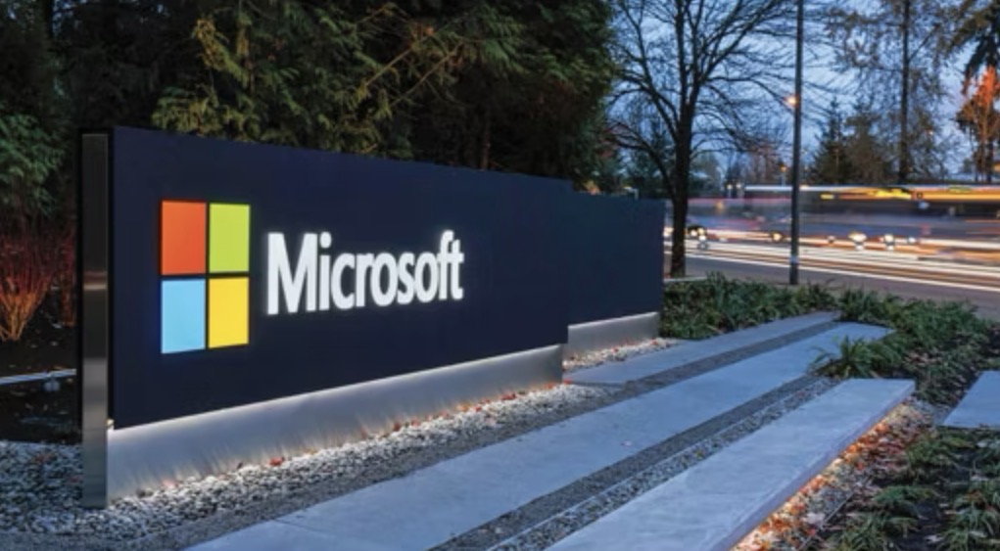
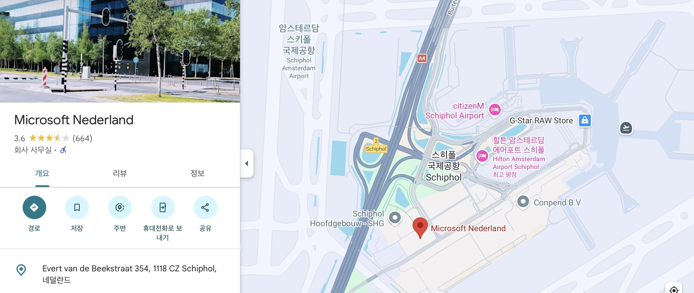
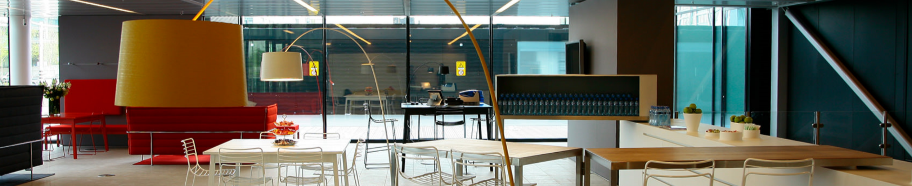
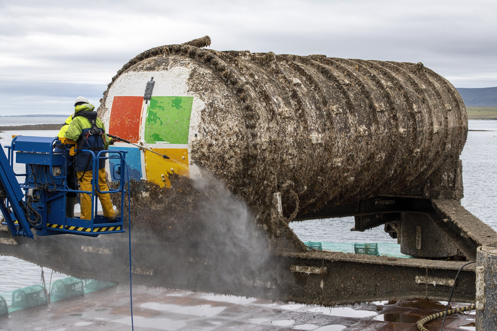

Microsoft
Netherlands
유럽 클라우드 인프라의 심장부 —
AI · 환경 · 디지털 주권까지 해부한다
☁️ Azure
🤖 AI
🌱 Sustainability
🔐 Digital Sovereignty
18 slides
Overview
오늘의 구성
발표 개요
01
마이크로소프트란?
설립 배경 · 핵심 사업 3가지
02
왜 네덜란드에?
입지 조건 · 스키폴 공항 전략
03
Microsoft Netherlands 소개
36년 역사 · 오픈 이노베이션 허브
04
핵심 사업
클라우드 · AI · 환경 지속가능성
05
현재 겪는 문제들
전력 · 지역갈등 · 주권 · AI 규제
06
전공 연계 시사점
IT · 경영 · 국제정책 전공별 인사이트
07
방문 전 심화 질문
현지 실무진과 나눌 핵심 4가지
08
팀 역량 표현
융합 분석 · 소통 · 글로벌 실무
09
결론
기술 + 환경 + 사회가 연결된 기업
01
Chapter 01
마이크로소프트,
도대체
뭐하는 회사야?
"디지털 세상의 인프라와 도구를 만드는 회사"
01 / Intro
마이크로소프트 소개
1975년부터
세상을 바꿔온
디지털 인프라 기업
세상을 바꿔온
디지털 인프라 기업
설립
1975년 4월 4일 · 빌 게이츠 & 폴 앨런
본사
미국 워싱턴주 레드먼드
사명
지구상의 모든 사람과 조직이 더 많은 것을 성취할 수 있도록
"도로·전기·수도 같은 인프라를 짓고,
그 위에서 쓸 수 있는 도구를 파는 회사"
그 위에서 쓸 수 있는 도구를 파는 회사"
🖥️
소프트웨어
우리가 매일 쓰는 바로 그것 — Windows, Office 365
☁️
클라우드 (Azure)
기업들의 "디지털 창고" — 데이터 저장·처리·AI 연산까지
🤖
AI (Copilot · OpenAI)
ChatGPT 만든 OpenAI의 최대 투자사 — 우리가 쓰는 AI 대부분이 MS 인프라 위에서 작동
핵심 메시지: Microsoft는 단순 프로그램 회사가 아니라, 전 세계 디지털 환경을 움직이는 기업이다.
02
Chapter 02
왜 하필
네덜란드인가?
"네덜란드는 유럽 디지털 산업의 중심지 역할을 한다"
02 / Location
입지 전략
유럽의 디지털
고속도로 위에 짓다
고속도로 위에 짓다
✈️
스키폴 공항 인접
유럽 전역 파트너가 쉽게 방문 가능한 허브
🌐
AMS-IX
유럽 인터넷의 "중앙 교차로" — 데이터가 가장 빠르게 이동하는 곳
🚢
해저 케이블 거점
세계적인 항구·공항 보유, 영국·유럽 전역 초고속 연결
🌱
재생에너지 활용
해상풍력으로 데이터센터 전력 공급 가능
🏙️
암스테르담 인재풀
도심 인접 → 우수 인재 채용 · 문화 흡수에 유리

💡 배달 물류센터가 고속도로 IC 옆에 있듯,
Microsoft도 "어디서든 빠르게 올 수 있는 곳"을 선택했다.
Microsoft도 "어디서든 빠르게 올 수 있는 곳"을 선택했다.
출처: Amsterdam Airport City 공식 인터뷰
03
Chapter 03
Microsoft
Netherlands
어떤 곳인가?
36년 역사 · 1,000명+ · 오픈 이노베이션 허브
03 / Company Profile

기본 정보
정식 명칭
Microsoft Netherlands B.V.
위치
Amsterdam Airport City (스키폴 공항 옆)
대표
Joris Schoonis (CEO)
1,000+
직원 수
30만
고객 수
오피스가 특이해요 — "카페처럼 열린 회사"
일반 기업
— 직원만 입장 가능
— 지정 책상 배치
— 전체 공간 내부 전용
Microsoft Netherlands
— 외부인도 자유 입장
— 핫데스킹 (지정석 없음)
— 7,000㎡(72%) 고객·파트너 개방
핵심 철학: "Work from anywhere, anytime, with anyone"
출처: Vecos Case Study (2025) · Office Snapshots (2023)
04
Chapter 04
Microsoft의
핵심 사업
☁️ 클라우드 · 🤖 AI · 🌱 환경 지속가능성
04 / Cloud & AI
핵심 사업 ① ②
클라우드 & AI
☁️
클라우드 (Azure)
"기업용 인터넷 저장공간 + 컴퓨터 시스템"
사진 저장, 회사 데이터 관리, AI 서비스 운영까지 모두 가능
사진 저장, 회사 데이터 관리, AI 서비스 운영까지 모두 가능
→유럽 데이터 저장 및 AI 서비스 운영 거점
→전 세계 30개국+, 200개 이상 데이터센터 운영
→네덜란드 = Azure·AI 인프라와 친환경 전략의 핵심 거점
Azure West Europe
Teams
SharePoint
🤖
AI 사업
"AI를 이용해 사람 일을 더 빠르고 편하게"
지금의 Microsoft는 소프트웨어 → AI·클라우드 회사로 전환 중
지금의 Microsoft는 소프트웨어 → AI·클라우드 회사로 전환 중
→Azure OpenAI Service: 기업이 생성형 AI를 Azure에서 직접 사용
→Copilot: MS 365·Windows에 내장된 AI 비서
→2025년: AI 데이터센터에 800억 달러 투자 계획 발표
Azure AI
Copilot
OpenAI 협력
출처: microsoft.com 공식 · AI Magazine (2025.10)
04 / Sustainability
핵심 사업 ③
🌱 환경 및
지속가능성
지속가능성
"기술 기업도 환경 문제를 책임져야 한다" —
단순 친환경 기업을 넘어 다른 기업의 ESG를 돕는 플랫폼 기업으로
🌿
탄소 네거티브 (~2030)
배출하는 탄소보다 더 많이 제거
💧
워터 포지티브
사용한 물보다 더 많은 물을 자연에 돌려줌
⚡
재생에너지 100%
Vattenfall과 협력 — 네덜란드 데이터센터 100% 풍력에너지
♻️
Circular Center
하드웨어 재사용·재활용률 80% 이상 달성 (세계 최초, 암스테르담 개설)

Project Natick
Microsoft의 해저 데이터센터 실험 — 냉각 비용 절감과 재생에너지 활용을 동시에 실현
출처: Microsoft Sustainability Report (2025) · Microsoft Source EMEA (2025)

05
Chapter 05
현재 Microsoft가
겪는 문제들
"기술 발전 뒤에 있는 고민들"
⚡ 전력 문제
🌍 지역사회 갈등
🔐 디지털 주권
🤖 AI 규제
Satya Nadella: "AI 산업은 사회적 수용성(social permission)을 확보해야 한다"
05 / Issues 1·2
뜨거운 현안
⚡ 전력 · 🌍 지역사회 갈등
문제 1 — 데이터센터 전력
AI 시대, 전력 소비가 폭발적으로 증가
→ 생성형 AI는 기존 서비스보다 훨씬 높은 전력 소비
→ 고성능 GPU 서버 + 24시간 냉각 필요
→ 암스테르담·북홀란트에 MS·Google·Meta 데이터센터 집중
→ 송전망 부족 + 지역 전력 인프라 과부하
"미국 빅테크가 다 가져가서 중소 데이터센터들은 전기조차 못 구하고 있다"
— 리크 파이퍼스, 전 Equinix 대표
AI 산업 확대
vs
전력망 안정성
문제 2 — 지역사회 갈등
확장 vs 지역 반발
→ 농지 훼손 · 지역 경관 변화 · 질소 배출
→ 암스테르담市: 2030년까지 신규 건설 금지령
→ MS는 "기허가 파이프라인" 주장하며 85m 건물 3동 건설 중
산업계 주장
클라우드·AI 산업 기반 — 국가 경쟁력 핵심
비판 측 주장
전력 소비는 크지만 실제 지역 고용 효과 제한적
출처: Dutch Brief (2026.01) · AI Data Center Index (2026.04)
05 / Issues 3·4
뜨거운 현안
🔐 디지털 주권 · 🤖 AI 규제
문제 3 — 디지털 주권
"유럽 데이터인데 운영사는 미국 기업"
미국 CLOUD Act: 미국 기업이 해외 서버에 저장된 데이터에도 미국 정부 요청 시 접근 가능
→ 글로벌 클라우드 시장 = AWS·Azure·Google 등 미국 기업 점유
→ 유럽: 자체 디지털 주권 강화 필요 vs 미국 기술 의존 현실
Microsoft의 대응
EU 데이터 바운더리
디지털 주권 클라우드 (Sovereign Cloud)
유럽 디지털 서약 (AI 생태계 구축)
문제 4 — EU AI Act
"세계에서 가장 강한 AI 규제"
EU는 혁신 속도보다 안전성·책임성·개인정보 보호·공정성을 우선
→ 주요 규제: GDPR · Digital Markets Act · EU AI Act
→ OpenAI 협력·Copilot·Azure AI 등으로 생성형 AI 생태계 빠르게 확대
→ 주요 규제 대상: 개인정보 처리·AI 투명성·저작권·알고리즘 편향
핵심 메시지
"기술이 발전할수록 사회적 책임도 함께 커진다"
출처: EU AI Act (2024.08 발효) · Microsoft 공식 GDPR 대응 문서
06
Chapter 06
우리 전공과
Microsoft는
어떻게 연결될까?
전공 연계 시사점 · 방문 전 심화 질문 · 팀 역량
06 / Major Connection
전공 연계 시사점
"우리 전공과 Microsoft의 연결점"
💻
컴퓨터 · AI · 데이터
IT 전공
"단순히 코딩만 하는 것이 아니라, 전 세계 데이터를 안전하게 모으고 분석하는 거대한 인프라를 배우는 것"
→ Azure 기반 차세대 AI 생태계 구축 프로세스
→ GPU · HBM · 데이터센터 · 냉각 기술 등 반도체 인프라 수요 이해
📈
경영 · 비즈니스
경영 전공
"물건을 한 번 팔고 끝내는 시대는 갔다. 전 세계를 내 단골로 만들고, 환경까지 생각하는 트렌디한 장사법"
→ 구독 경제 모델 및 플랫폼 비즈니스 전략
→ ESG 경영: 데이터센터 전력 문제 해결을 위한 녹색 경영
🌍
국제 · 행정 · 정책
정책 전공
"거대 글로벌 기업이 한 나라의 법을 무시하지 못하도록 길들이고 조율하는 밀당의 기술"
→ EU 규제(GDPR, AI Act) 대응 — 정부-기업 간 협력 모델
→ 디지털 주권 · 기술 패권 경쟁 · 글로벌 플랫폼 의존성 이해
전공별 인사이트: 기술(💻) + 경영(📈) + 정책(🌍)의 유기적 융합 메커니즘
06 / Visit Questions
AI 윤리 기준 파악
기술-환경 공존 확인
빅테크 협력 구조 이해
글로벌 취업 기회 모색
방문 전 심화 질문
현지 실무진과 나눌 핵심 4가지
🤖
책임 있는 AI
유럽의 엄격한 AI 규제 속에서 '안전하고 윤리적인 AI'를 위해 어떤 프로세스를 준비하고 있나요?
⚡
환경 문제
전력 소비가 높은 AI 데이터센터의 전기 및 열 문제를 해결하기 위해 현지에서 도입 중인 친환경 기술은?
🌍
글로벌 기술 이슈
EU 국가들이 강조하는 '디지털 주권'과 Microsoft의 글로벌 데이터 관리 정책은 어떻게 조화를 이루고 있나요?
🎓
진로 탐색
인재 채용 시 중요하게 평가하는 역량은? IT 비전공자가 지사 내에서 가질 수 있는 독보적인 경쟁력은 무엇인가요?
단순 자료 조사를 넘어 실제 현지 방문 시 실무진과 심도 있는 논의가 가능한 현안 중심 질문
Conclusion
팀 역량 · 결론
팀이 보여준
3가지 역량
3가지 역량
🔗
융합적 분석 역량
AI(기술)·전력(환경)·EU 규제(정책) — 기술이 사회 전반에 미치는 영향을 다각도로 분석
💬
커뮤니케이션 역량
복잡한 IT 전문 용어 대신 비유·사례·쉬운 표현 — 비전공자도 직관적으로 이해 가능
🌐
글로벌 실무 소통 역량
단순 자료 조사를 넘어 현지 실무진과 심도 있는 논의가 가능한 현안 중심 질문 준비
결론 —
"기술 · 환경 · 사회가
연결된 기업"
"기술 · 환경 · 사회가
연결된 기업"
☁️
본질
단순 컴퓨터 회사를 넘어 AI·클라우드 기반으로 환경·정책·사회와 상생하는 디지털 생태계 중심
🔬
연구 의의
기술 + 경영 + 정책의 유기적인 융합 메커니즘 확인
🚀
향후 다짐
글로벌 현안 분석 경험을 바탕으로, 각자의 전공 분야에서 사회적 가치를 창출하는 융합형 인재로 성장
Microsoft Netherlands · 2026 Study Visit